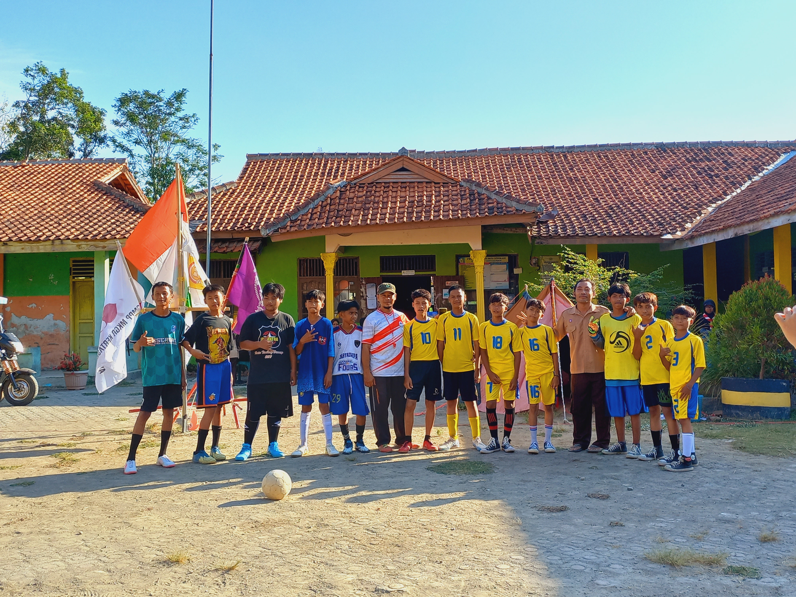
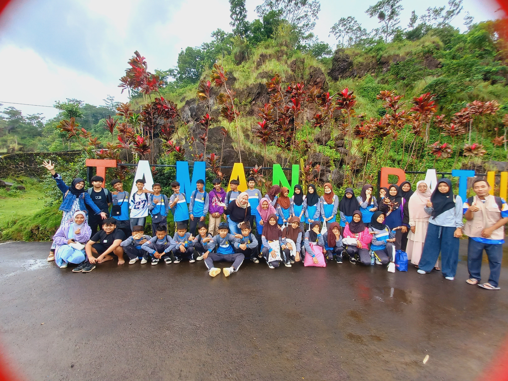
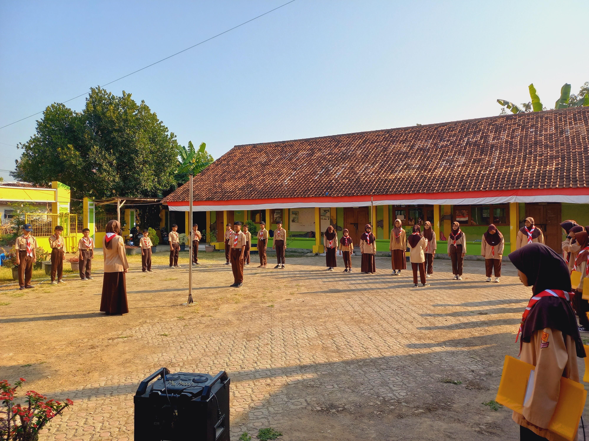
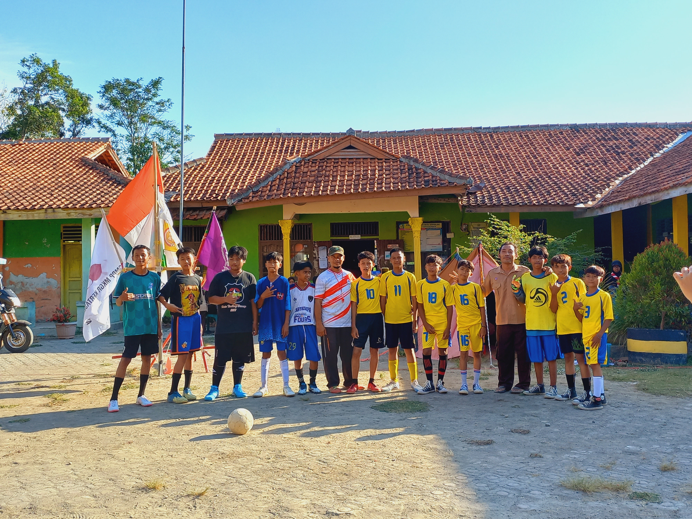
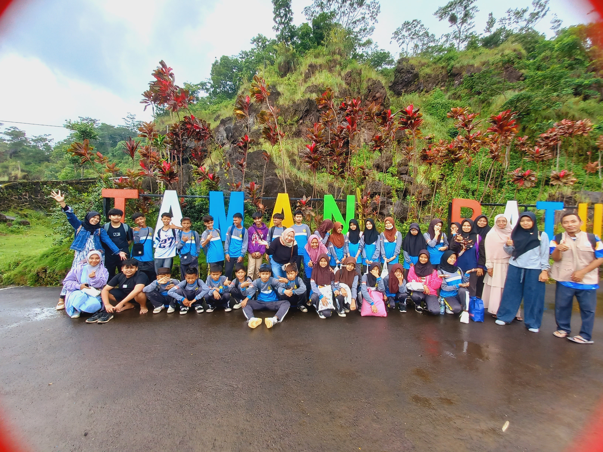
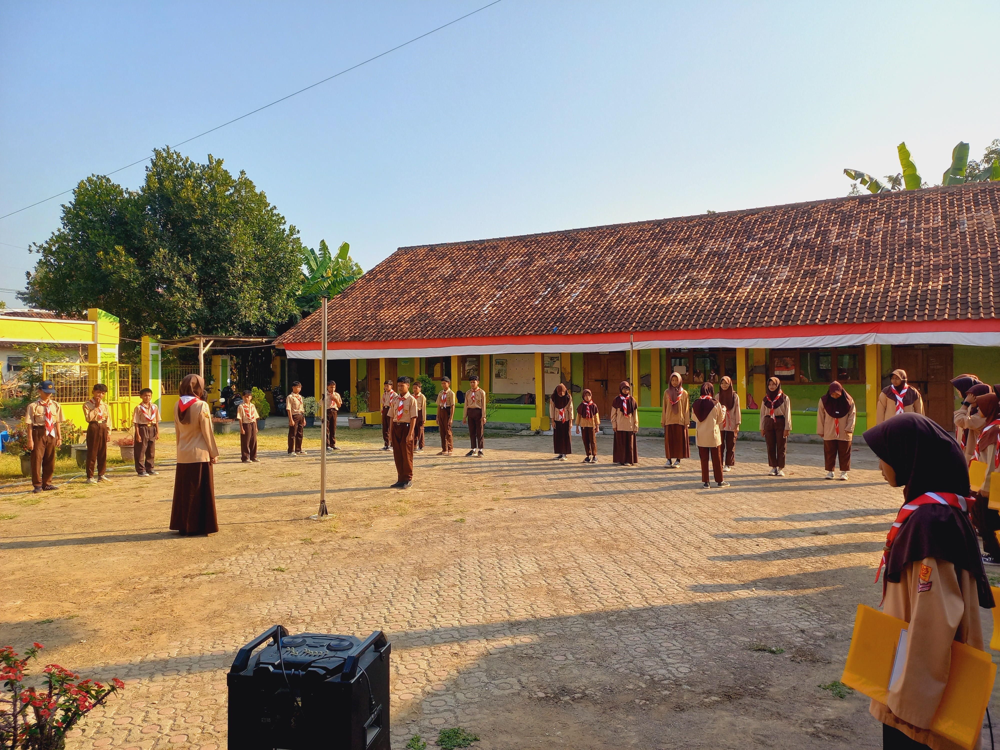

Sekolah Unggulan dengan Pendidikan Berkualitas
Kami adalah sekolah yang berkomitmen untuk mencetak generasi unggul, kreatif, dan inovatif.
SMP P MKGR Kertasmaya didirikan dengan tujuan memberikan pendidikan berkualitas bagi siswa-siswi di wilayah Kertasmaya dan sekitarnya.
Menjadi sekolah unggulan yang menghasilkan generasi berakhlak mulia, cerdas, dan berprestasi.

Alamat: Jl. Raya Tenajar Kompleks Mesjid Jami Al-Marfu'iyah, Desa Tenajar Lor Kertasemaya-Indramayu
Email: diensbanten7@gmail.com
Telepon: +62 813-1202-5742 (Ibu Juju)
 





Simak video profil sekolah kami untuk mengetahui lebih lanjut tentang fasilitas dan kegiatan di SMP P MKGR Kertasmaya.